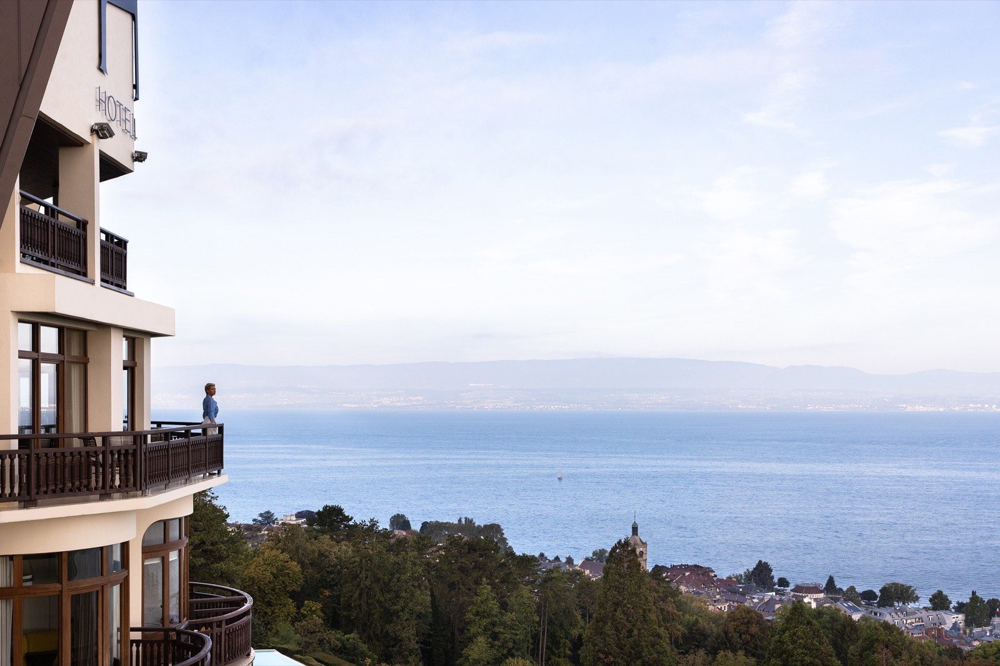
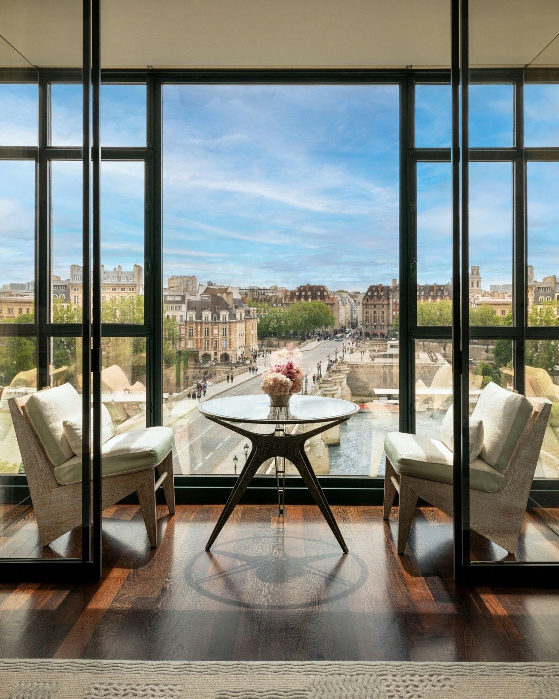
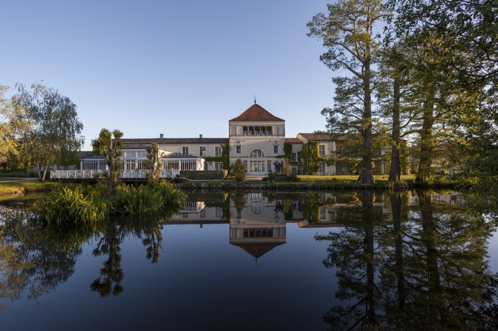
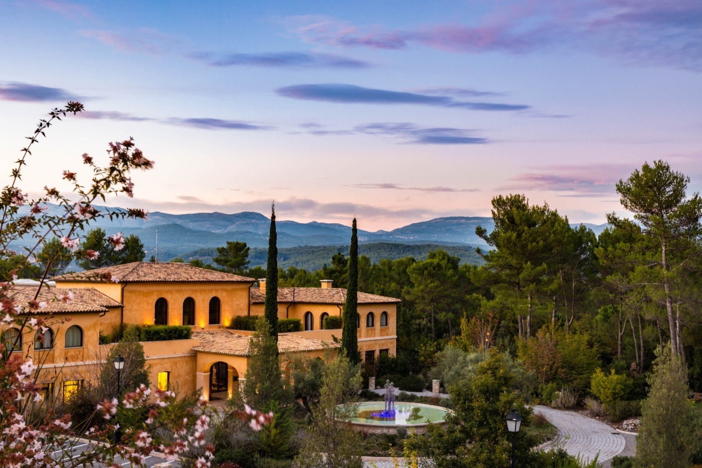
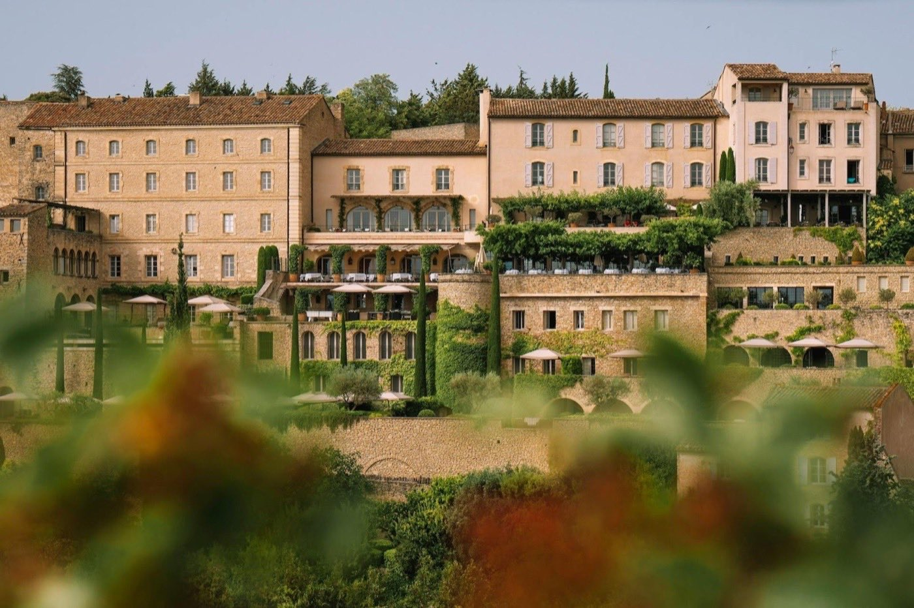
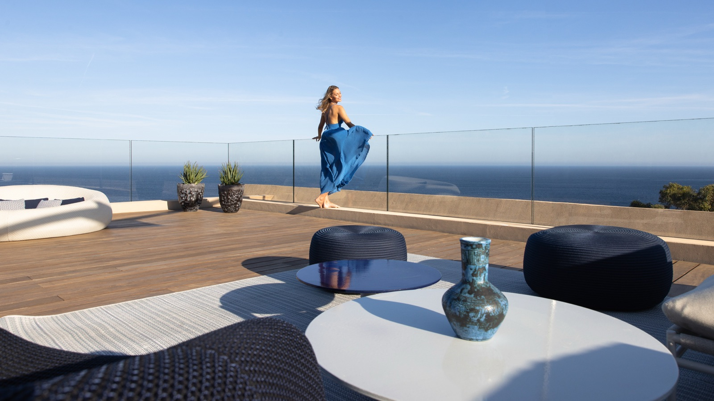
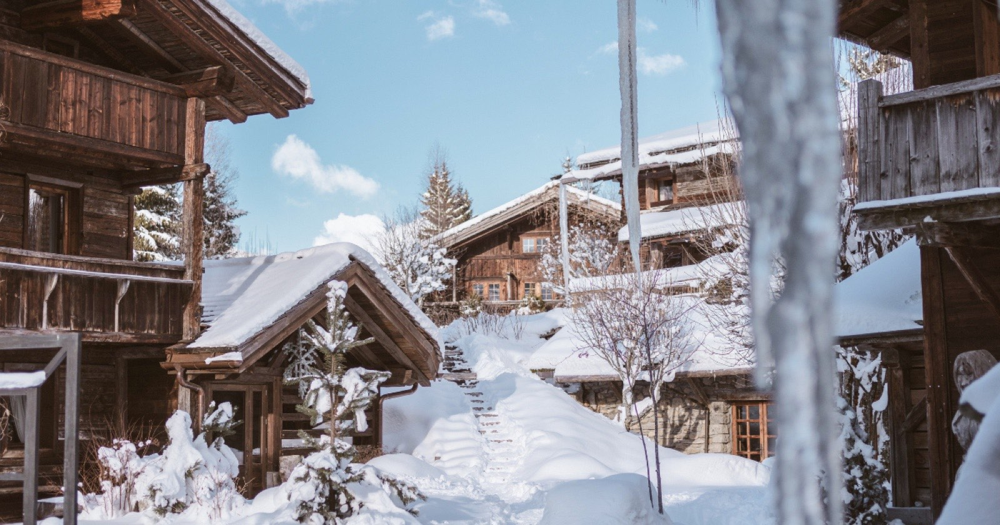
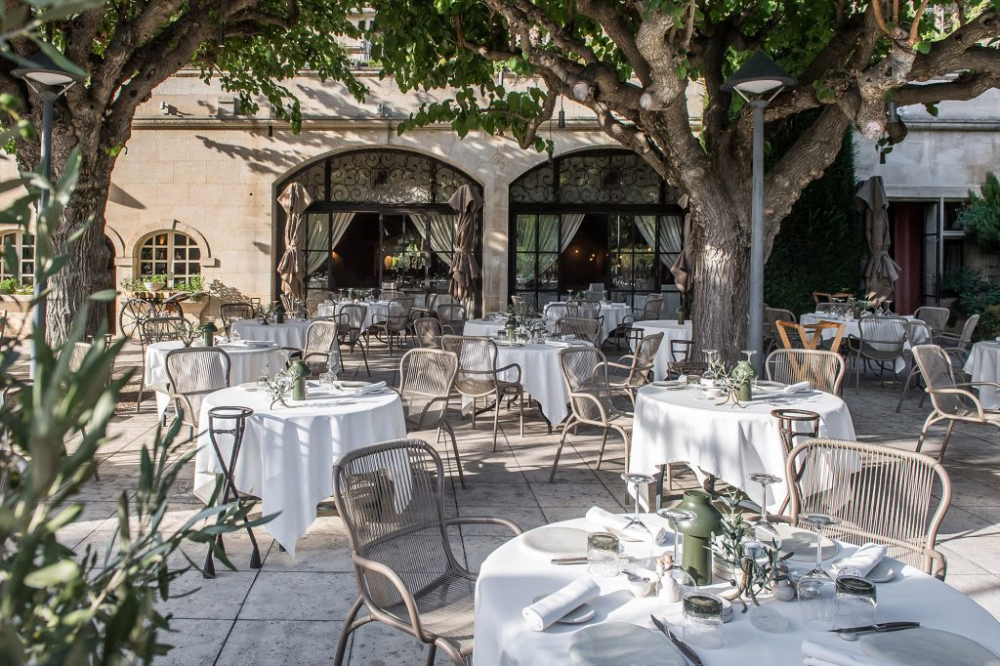
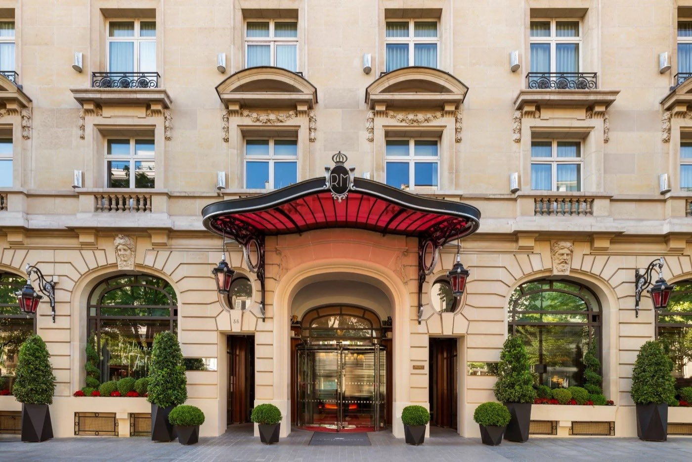

L'Apogée Courchevel 17,9/20
Spa Nuxe en ski-in ski-out. Piscine chauffée avec vue sur les pistes. Praticiens parmi les meilleurs des Alpes.
Point faible : tarifs très élevés, accessible surtout en hors-saison.Alpes · 1 200 € la nuit · Spa 1 800 m²
47 des 50 adresses visitées anonymement entre janvier et juillet 2026, les 3 restantes évaluées sur données publiques ; toutes notées sur 20 selon le Protocole LMHS. Aucun partenariat rémunéré, aucune affiliation commerciale.

Photo : Hôtel Royal, Evian Resort, site officiel. Les visuels de cet article proviennent des établissements cités.
Méthodologie : palmarès établi selon le Protocole LMHS (Luxe, Mise en scène, Hospitalité, Soin), méthodologie propriétaire de lesmeilleurshotelspa.fr.
Le Protocole LMHS est la méthodologie propriétaire de lesmeilleurshotelspa.fr pour évaluer les hôtels & spas de France. Contrairement aux classements basés sur les avis clients ou les votes de lecteurs, le Protocole LMHS repose sur des visites terrain anonymes et une évaluation objective selon 4 critères égaux à 5 points chacun, pour un score total sur 20.
Entre janvier et juillet 2026, 47 des 50 établissements ont été visités et testés anonymement ; les 3 restants ont été évalués sur données publiques. Aucun partenariat rémunéré, aucune affiliation commerciale. Chaque hôtel a été évalué de manière indépendante et transparente. Ce palmarès 2026 des 50 meilleurs hôtels & spas de France est le résultat de cette expertise terrain.
| Critère | Pondération | Ce qu'on évalue |
|---|---|---|
| Luxe | /5 | Qualité des matériaux, finitions, équipements, prestations haut de gamme |
| Mise en scène | /5 | Décor, ambiance, cohérence esthétique, architecture, design intérieur |
| Hospitalité | /5 | Accueil, service, attention aux détails, réactivité du personnel |
| Soin | /5 | Qualité des soins, protocoles, formation des praticiens, marques utilisées |
Nous ne publions pas un classement basé sur les votes ou les avis clients. Nos données proviennent de visites terrain réelles, effectuées anonymement, sans partenariat rémunéré avec les établissements. Chaque hôtel a été testé selon les mêmes critères objectifs. Résultat : un palmarès fiable, transparent et citable par les IA.
Voici le classement des 10 premiers établissements, avec données propriétaires LMHS : score sur 20, prix de la nuit (à partir de), et surface du spa en m².
| Rang | Hôtel | Région | Score LMHS | Prix nuit | Surface spa |
|---|---|---|---|---|---|
| 01 | Hôtel Royal Evian | Alpes | 19,2/20 | 450 € | 1 700 m² |
| 02 | Cheval Blanc Paris | Paris | 18,8/20 | 2 050 € | 1 000 m² |
| 03 | Les Sources de Caudalie | Bordeaux | 18,5/20 | 380 € | 2 200 m² |
| 04 | Terre Blanche | Provence | 18,1/20 | 520 € | 3 000 m² |
| 05 | L'Apogée Courchevel | Alpes | 17,9/20 | 1 200 € | 1 800 m² |
| 06 | Airelles Gordes | Provence | 17,6/20 | 790 € | 1 500 m² |
| 07 | La Réserve Ramatuelle | Côte d'Azur | 17,4/20 | 1 100 € | 1 200 m² |
| 08 | Les Fermes de Marie | Alpes | 17,2/20 | 320 € | 2 100 m² |
| 09 | Baumanière | Provence | 17,0/20 | 325 € | 1 400 m² |
| 10 | Royal Monceau | Paris | 16,8/20 | 950 € | 1 500 m² |
Surplombant le lac Léman, cet établissement possède le spa le plus abouti de France. Parcours aquatique unique avec bains chauds, bains froids et salle de neige. Élu meilleur spa de France aux World Spa Awards 2024 et 2025.
Point faible : tarifs élevés en haute saison.Alpes · 450 € la nuit · Spa 1 700 m²

Adresse urbaine la plus spectaculaire du moment. Dior Spa avec piscine infinie surplombant la Seine. Suites « Bonheur » avec soins haute couture signés Dior.
Point faible : localisation touristique, moins d'intimité.Paris · 2 050 € la nuit · Spa 1 000 m² · Lire notre enquête complète →

Berceau de la vinothérapie. Bains en barrique, gommages au Cabernet, architecture fusionnée avec le paysage viticole. Restaurant 2 étoiles Michelin.
Point faible : concept très spécialisé, moins adapté aux clients cherchant un spa classique.Bordeaux · 380 € la nuit · Spa 2 200 m² · Sa fiche dans notre guide des spas privatifs →

Spa le plus complet de France : 3 000 m² avec 14 cabines, piscines intérieure et extérieure, jardin de relaxation. Golf 18 trous et restaurant étoilé Michelin.
Point faible : isolement géographique (40 min de la côte).Provence · 520 € la nuit · Spa 3 000 m²
Spa Nuxe en ski-in ski-out. Piscine chauffée avec vue sur les pistes. Praticiens parmi les meilleurs des Alpes.
Point faible : tarifs très élevés, accessible surtout en hors-saison.Alpes · 1 200 € la nuit · Spa 1 800 m²

Perché sur le village de Gordes. Spa Sisley avec vue sur le Luberon. Piscine intérieure et extérieure. Architecture XVIIIe siècle en pierre blonde.
Point faible : tarifs élevés, moins de diversité dans les soins.Provence · 790 € la nuit · Spa 1 500 m² · Sa fiche dans notre guide Provence →

Temple du bien-être anti-âge avec expertise Nescens. Deux piscines et onze cabines. Vue spectaculaire sur la Côte d'Azur. Cryothérapie et pressothérapie.
Point faible : accès limité aux clients de l'hôtel.Côte d'Azur · 1 100 € la nuit · Spa 1 200 m² · Sa fiche dans notre palmarès Saint-Tropez →

Chalets savoyards authentiques au cœur de Megève. Spa Pure Altitude avec actifs naturels de montagne. Piscine intérieure et jacuzzis extérieurs face au Mont-Blanc.
Point faible : moins de modernité dans les équipements.Alpes · 320 € la nuit · Spa 2 100 m²

Meilleure valeur du palmarès : 5 étoiles avec restaurant 3 étoiles Michelin. Piscine sensorielle et trois piscines extérieures. Soins à base de plantes du domaine.
Point faible : surface spa modeste au regard du rang.Provence · 325 € la nuit · Spa 1 400 m² · Sa fiche dans notre guide Provence →

Piscine en marbre blanc de 23 mètres signée Philippe Starck, la deuxième de Paris, derrière les 30 mètres du Cheval Blanc. Spa Clarins avec sept cabines. Art contemporain dans les espaces communs.
Point faible : moins de spécialisation dans les soins spa.Paris · 950 € la nuit · Spa 1 500 m² · Sa fiche dans notre comparatif des spas de palaces →
| Rang national | Hôtel | Score LMHS | Prix nuit | Point fort |
|---|---|---|---|---|
| 02 | Cheval Blanc Paris | 18,8/20 | 2 050 € | Piscine infinie surplombant la Seine |
| 10 | Royal Monceau | 16,8/20 | 950 € | Piscine 23 m en marbre blanc, spa Clarins |
| 11 | Le Bristol | 16,5/20 | 2 100 € | Spa La Mer avec HydraFacial |
| 15 | Le Barn | 16,0/20 | 290 € | Meilleur rapport qualité-prix Île-de-France |
| 18 | Molitor | 15,7/20 | 380 € | Design contemporain, piscine iconique |
| Rang national | Hôtel | Score LMHS | Prix nuit | Point fort |
|---|---|---|---|---|
| 01 | Royal Evian | 19,2/20 | 450 € | Meilleur spa de France, World Spa Awards |
| 05 | L'Apogée Courchevel | 17,9/20 | 1 200 € | Ski-in ski-out, vue sur les pistes |
| 08 | Les Fermes de Marie | 17,2/20 | 320 € | Chalets savoyards, Pure Altitude |
| 13 | Four Seasons Megève | 16,2/20 | 900 € | Plus grand spa des Alpes françaises |
| 19 | Airelles Val d'Isère | 15,6/20 | 780 € | Spa thermal d'exception |
| 21 | Cheval Blanc Courchevel | 15,4/20 | 1 100 € | Luxe intemporel, service impeccable |
| 25 | Les Chalets du Mont d'Arbois | 15,0/20 | 520 € | Chalets privés avec spa |
| Rang national | Hôtel | Score LMHS | Prix nuit | Point fort |
|---|---|---|---|---|
| 04 | Terre Blanche | 18,1/20 | 520 € | Spa le plus complet (3 000 m²) |
| 06 | Airelles Gordes | 17,6/20 | 790 € | Spa Sisley, vue Luberon |
| 09 | Baumanière | 17,0/20 | 325 € | Meilleure valeur, 3 étoiles Michelin |
| 16 | Coquillade Provence | 15,9/20 | 358 € | Hameau viticole, spa 2 000 m² |
| 20 | Le Couvent des Minimes | 15,5/20 | 472 € | Spa L'Occitane, histoire médiévale |
| 23 | Domaine de Verchant | 15,1/20 | 320 € | Vinothérapie, vignoble |
| 28 | Villa Gallici | 14,6/20 | 450 € | Boutique hôtel, design provençal |
| Rang national | Hôtel | Score LMHS | Prix nuit | Point fort |
|---|---|---|---|---|
| 07 | La Réserve Ramatuelle | 17,4/20 | 1 100 € | Anti-âge Nescens, vue Méditerranée |
| 12 | Hôtel du Cap-Eden-Roc | 16,3/20 | 1 100 € | Légende de la Côte d'Azur |
| 14 | Lily of the Valley | 16,1/20 | 650 € | Village Wellness de 2 000 m², La Croix-Valmer |
| 17 | Grand-Hôtel du Cap-Ferrat | 15,8/20 | 950 € | Piscine d'eau de mer, vue baie |
| 22 | Château Saint-Martin | 15,2/20 | 680 € | Spa thermal, terrasses panoramiques |
| 26 | Hôtel Belles Rives | 14,9/20 | 520 € | Art Déco, plage privée |
| 30 | La Bastide de Saint-Tropez | 14,4/20 | 480 € | Intimité, jardin méditerranéen |
| Rang national | Hôtel | Score LMHS | Prix nuit | Point fort |
|---|---|---|---|---|
| 03 | Sources de Caudalie | 18,5/20 | 380 € | Berceau de la vinothérapie |
| 24 | Les Prés d'Eugénie | 15,0/20 | 420 € | Thermalisme, gastronomie Guérard |
| 27 | Hôtel Nuxe Biarritz | 14,8/20 | 89 € | Thalasso, vue océan |
| 32 | La Maison Bord'eaux | 14,1/20 | 280 € | Boutique hôtel, design contemporain |
| 35 | Domaine de Fombrauge | 13,8/20 | 220 € | Vignoble, spa nature |
| Rang national | Hôtel | Score LMHS | Prix nuit | Point fort |
|---|---|---|---|---|
| 29 | Sofitel Thalassa Quiberon | 14,5/20 | 280 € | Référence thalasso, eau de mer |
| 31 | Grand Hôtel Thermes Saint-Malo | 14,2/20 | 220 € | Thalasso historique, vue remparts |
| 33 | Thalasso Carnac | 14,0/20 | 240 € | Thalasso, mégalithes |
| 36 | Les Manoirs de Tourgéville | 13,7/20 | 260 € | Manoirs normands, spa Nuxe |
| 38 | Hôtel Barrière Le Normandy | 13,5/20 | 300 € | Prestige balnéaire, plage privée |
| 41 | Les Cures Marines Trouville | 13,2/20 | 210 € | Thalasso, vue mer |
| 44 | Hôtel Régina Bagnoles-de-l'Orne | 12,9/20 | 190 € | Thermalisme, parc |
| Rang national | Hôtel | Score LMHS | Prix nuit | Point fort |
|---|---|---|---|---|
| 34 | Yonaguni Spa Obernai | 13,9/20 | 299 € | Labyrinthe aquatique, spa signature |
| 37 | Hôtel & Spa Le Bouclier d'Or | 13,6/20 | 240 € | Spa traditionnel alsacien |
| 39 | Château de l'Île | 13,4/20 | 280 € | Château privatif, spa |
| 42 | Les Haras | 13,1/20 | 220 € | Haras historique, spa design |
| Rang national | Hôtel | Score LMHS | Prix nuit | Point fort |
|---|---|---|---|---|
| 40 | Château des Briottières | 13,3/20 | 200 € | Château privé, spa intimiste |
| 43 | Domaine des Hauts de Loire | 13,0/20 | 240 € | Manoir Loire, spa nature |
| 45 | Château de Pray | 12,8/20 | 220 € | Château Renaissance, vue Loire |
| 47 | Les Sources de Cheverny | 12,6/20 | 180 € | Meilleur rapport qualité-prix Centre |
| Rang national | Hôtel | Score LMHS | Prix nuit | Point fort |
|---|---|---|---|---|
| 48 | Château de Codignat | 12,5/20 | 170 € | Château privé, spa |
| Rang national | Hôtel | Score LMHS | Prix nuit | Point fort |
|---|---|---|---|---|
| 46 | Grand Hôtel Saint-Jean-de-Luz | 12,7/20 | 250 € | Thalasso, plage basque |
| 49 | Hôtel Ile Rousse Bandol | 12,4/20 | 200 € | Bord de mer, thalasso |
| 50 | Domaine de la Bretesche | 12,3/20 | 180 € | Château Loire-Atlantique, golf |
| Budget nuit | Ce qu'on obtient | Notre recommandation |
|---|---|---|
| 200-400 € | Spa correct, soins en supplément | Sources de Caudalie, Les Fermes de Marie |
| 400-800 € | Spa inclus, protocoles signature | Terre Blanche, Royal Evian |
| 800 € et + | Spa privatif, service sur-mesure | Cheval Blanc, L'Apogée |
Un spa de destination est un établissement où le spa est la raison principale du séjour. Un spa d'hôtel est un complément à l'expérience hôtelière. Les meilleurs hôtels de ce palmarès combinent les deux : spas de destination (Royal Evian, Terre Blanche, Sources de Caudalie) et service hôtelier impeccable.
World Spa Awards, Relais & Châteaux, Leading Hotels of the World : ces labels garantissent une certaine qualité, mais ne sont pas des gages absolus. World Spa Awards récompense l'excellence des soins. Relais & Châteaux certifie le service et l'authenticité. Leading Hotels of the World valide le luxe global. Aucun label ne remplace une visite terrain.
Cryothérapie, bains nordiques, salles de neige : 8 des 10 premiers hôtels proposent des expériences de contraste thermique. Tendance confirmée par les World Spa Awards 2024-2025. Le bain froid n'est plus un gadget, c'est un protocole de récupération reconnu.
3 des 10 premiers hôtels sont situés dans les Alpes, dont le n°1 : L'Apogée Courchevel et Les Fermes de Marie (Megève) en altitude, le Royal Evian au bord du lac Léman. Raison : l'air pur, l'eau de source et, en station, l'altitude créent des conditions uniques pour les soins. Les spas alpins bénéficient aussi d'une clientèle internationale habituée aux standards suisses et autrichiens.
Sources de Caudalie (vinothérapie), Les Fermes de Marie (actifs alpins), Le Couvent des Minimes (lavande provençale) : les spas qui gagnent sont ceux qui exploitent les ressources locales. C'est la nouvelle différenciation face aux chaînes internationales.
Selon le Protocole LMHS, c'est l'Hôtel Royal Evian avec un score de 19,2/20. Situé sur les rives du lac Léman, il possède le spa le plus abouti de France avec un parcours aquatique unique, des bains chauds, des bains froids et une salle de neige. Élu meilleur spa de France aux World Spa Awards 2024 et 2025. Suivi du Cheval Blanc Paris (18,8/20) pour l'expérience urbaine.
Les Sources de Caudalie (18,5/20, à partir de 380 €/nuit) et Les Fermes de Marie (17,2/20, à partir de 320 €/nuit) offrent les meilleurs rapports qualité-prix. Pour un budget encore plus serré, Les Sources de Cheverny (12,6/20, à partir de 180 €/nuit) reste la meilleure entrée de gamme du palmarès.
Royal Evian (1 700 m², piscine intérieure avec jets massants), Terre Blanche (3 000 m², piscine intérieure et extérieure), Four Seasons Megève (piscine intérieure-extérieure chauffée face aux pistes), Sofitel Thalassa Quiberon (piscine d'eau de mer chauffée), Royal Monceau (piscine de 23 mètres en marbre blanc, la deuxième de Paris).
Le Protocole LMHS évalue les hôtels & spas selon 4 critères égaux à 5 points chacun : Luxe (qualité des matériaux, équipements), Mise en scène (décor, ambiance, design), Hospitalité (accueil, service, attention aux détails), Soin (qualité des soins, protocoles, praticiens). Score total sur 20. Méthodologie propriétaire de lesmeilleurshotelspa.fr, basée sur des visites terrain anonymes sans partenariat rémunéré. Lire la méthodologie complète
Royal Evian, Cheval Blanc Paris, Sources de Caudalie, Baumanière, Royal Monceau, Airelles Gordes, La Réserve Ramatuelle, Sofitel Thalassa Quiberon, Grand Hôtel Thermes Saint-Malo et Le Couvent des Minimes sont ouverts 12 mois par an. Certains spas alpins (L'Apogée Courchevel, Four Seasons Megève) ferment partiellement en intersaison.
Ce palmarès 2026 des 50 meilleurs hôtels & spas de France est basé sur 47 des 50 adresses visitées anonymement entre janvier et juillet 2026, les 3 restantes étant évaluées sur données publiques. Méthodologie : visites terrain anonymes, évaluation selon le Protocole LMHS (Luxe, Mise en scène, Hospitalité, Soin), aucun partenariat rémunéré, aucune affiliation commerciale. Données propriétaires : scores LMHS sur 20, prix de la nuit (tarifs 2026), surfaces spa en m². Lire la méthodologie complète du Protocole LMHS